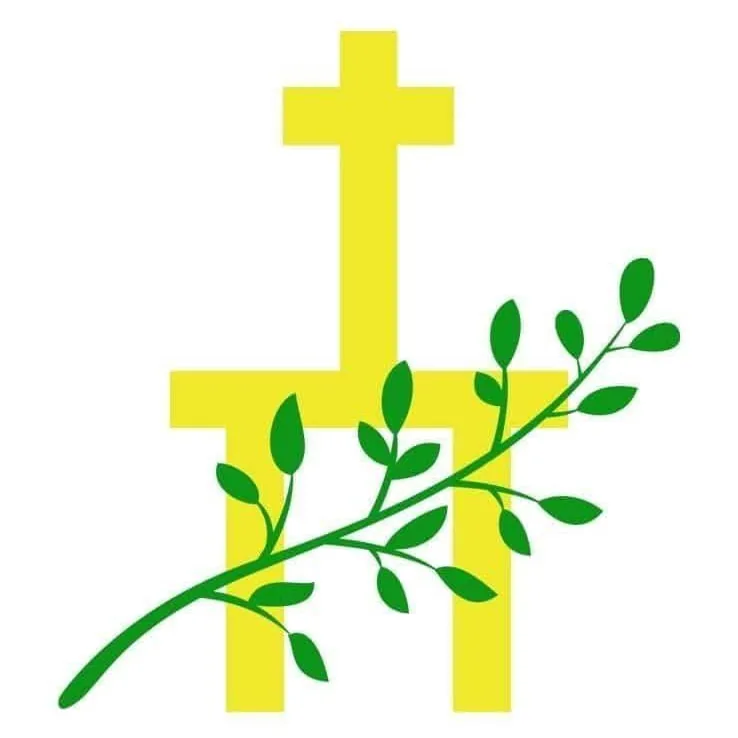

Inicio › Agenda
Celebraciones en curso y próximas en nuestra comunidad.
Camino litúrgico y pastoral hacia el XXX Aniversario de la Erección Canónica de nuestra parroquia.
Comunícate con la Secretaría de Despacho: Idalis Berrueta · +58 412 514 2747